CONSULTA A NUESTROS EXPERTOS
HORÓSCOPO 2024 GRATIS
Descubre lo que el año 2024 tiene reservado para ti consultando nuestro horóscopo gratuito en línea. En nuestra página web, te ofrecemos predicciones detalladas y personalizadas para cada signo del zodiaco, basadas en la influencia de los astros y planetas en tu vida. Obtén información valiosa sobre amor, carrera, finanzas y más, que te ayudará a tomar decisiones informadas y a aprovechar al máximo las oportunidades que se presenten en el nuevo año. No te pierdas la oportunidad de comenzar el 2024 con el pie derecho y descubre lo que el destino tiene preparado para ti.
Selecciona tu signo del zodiaco
 



Escribe tu email para recibir la lectura de tu horóscopo
¿Qué es el horoscopo anual?
El horóscopo anual es una herramienta poderosa utilizada por millones de personas en todo el mundo para obtener una visión general de las energías astrológicas que influirán en sus vidas durante todo el año. Este recurso ofrece predicciones personalizadas para cada signo del zodiaco, brindando orientación sobre los posibles eventos y desafíos que podrían surgir en diferentes áreas de la vida, como el amor, la carrera, las finanzas y la salud. Los astrólogos expertos examinan cuidadosamente la posición de los planetas y otros cuerpos celestes en el momento del nacimiento de una persona, así como los tránsitos planetarios que ocurrirán a lo largo del año, para ofrecer pronósticos precisos y detallados.
Al consultar el horóscopo anual, las personas pueden obtener una comprensión más profunda de sí mismas y de las fuerzas cósmicas que influyen en sus vidas. Esta información les permite prepararse mejor para los eventos futuros y tomar decisiones informadas sobre cómo abordar diferentes situaciones. Además, el horóscopo anual puede proporcionar una sensación de dirección y propósito, ayudando a las personas a alinear sus acciones con las fuerzas del universo para lograr un mayor éxito y realización personal en el año venidero.
Independientemente de si alguien es un creyente firme en la astrología o simplemente está interesado en explorar lo que el horóscopo anual tiene que decir, esta herramienta ofrece una perspectiva fascinante sobre las influencias celestiales y cómo pueden impactar nuestras vidas a lo largo del año. Ya sea para obtener orientación sobre decisiones importantes o simplemente por curiosidad, el horóscopo anual sigue siendo una fuente popular de información y reflexión para muchos en su viaje hacia el autodescubrimiento y el crecimiento personal.
¿Es fiable el horóscopo anual?
La fiabilidad del horóscopo anual ha sido objeto de debate y discusión a lo largo de los años, con opiniones divergentes sobre su validez y precisión. Aquellos que creen en la astrología argumentan que el horóscopo anual ofrece una guía útil y perspicaz sobre las energías cósmicas que influyen en nuestras vidas, basada en la interpretación experta de los movimientos planetarios y otros fenómenos celestiales. Los astrólogos capacitados examinan detenidamente la posición de los planetas en el momento del nacimiento de una persona, así como los tránsitos planetarios durante todo el año, para ofrecer pronósticos personalizados y detallados.
Sin embargo, los escépticos sostienen que el horóscopo anual carece de base científica y que sus predicciones son vagas y generalizadas, lo que permite que se apliquen a una amplia variedad de situaciones. Argumentan que la interpretación subjetiva de los astrólogos y la falta de pruebas empíricas sólidas socavan la credibilidad del horóscopo anual como una herramienta predictiva confiable. A pesar de estas críticas, muchos defensores de la astrología continúan confiando en el horóscopo anual como una guía valiosa para tomar decisiones importantes y comprender las influencias cósmicas en sus vidas.
En última instancia, la fiabilidad del horóscopo anual puede variar según la interpretación individual y la experiencia del astrólogo, así como la disposición del individuo para aceptar y aplicar los consejos ofrecidos. Para algunos, el horóscopo anual es una fuente confiable de orientación y comprensión, mientras que para otros, puede ser simplemente una forma de entretenimiento o reflexión personal. Como con cualquier herramienta de autoconocimiento, la fiabilidad del horóscopo anual depende en gran medida de la perspectiva y las creencias de cada individuo.